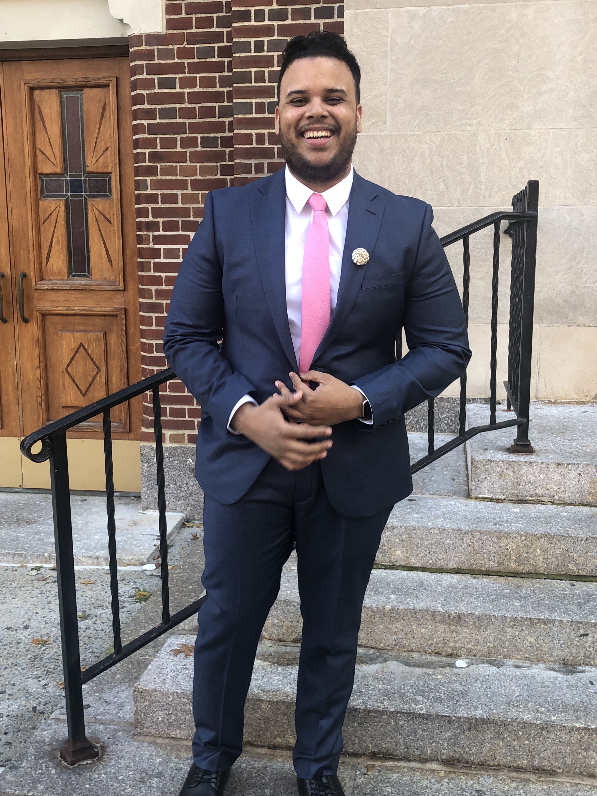
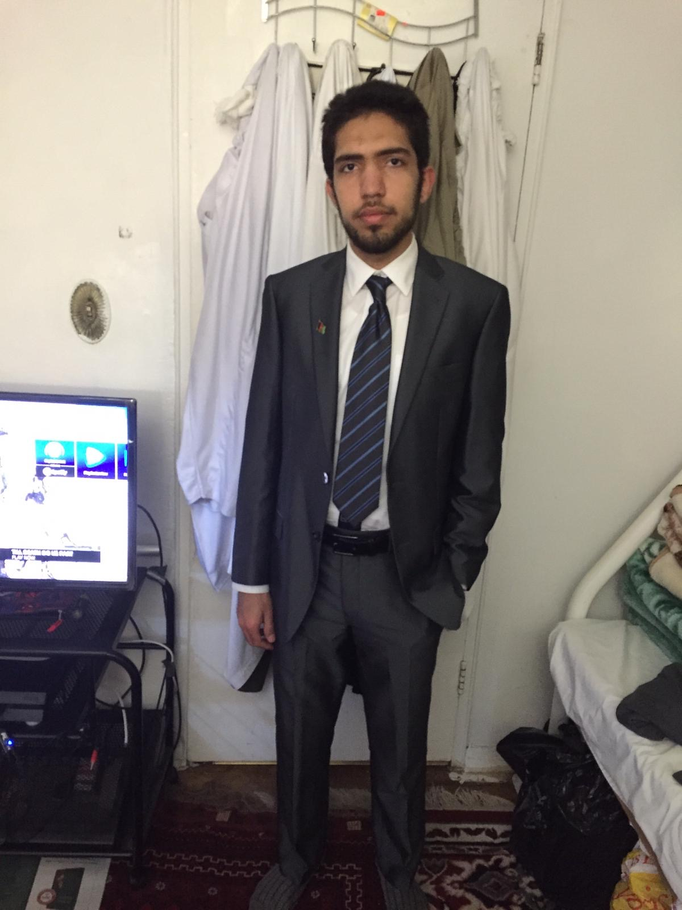
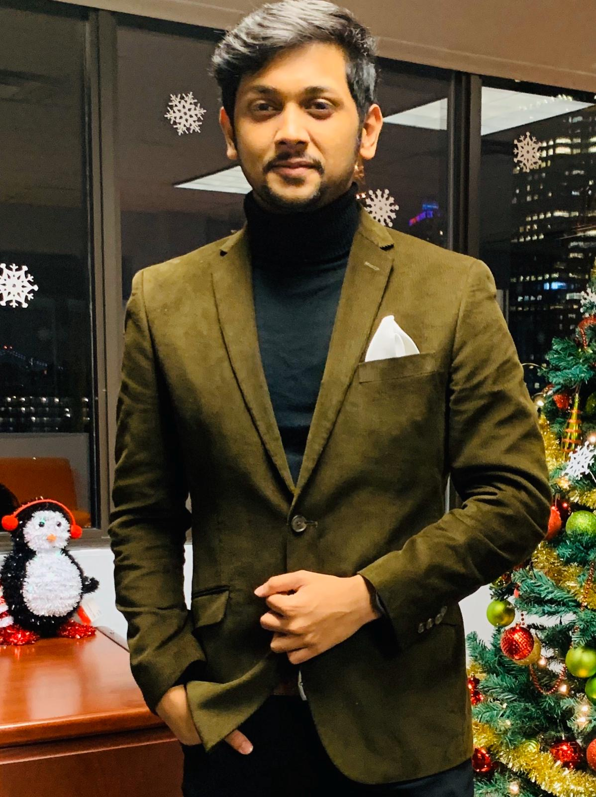
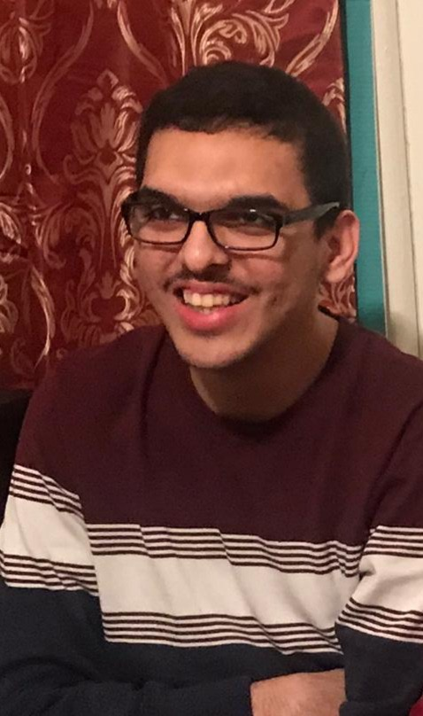

TS Technology is a family company founded in 2014 in the state of Delaware and we are headquartered in California. Our company as mentioned before is a general partnership which is composed of five members of the board who all agree to contribute their money, labor and skills to the company. The following five board members are:
Brain of this business, the one who created the idea, has a background in law that he completed in an international college Universidad Abierta Para Adultos. His big social network and financial skill, he was able to put together all the information with the group of engineers and to collect the funds necessary to make the idea a reality.
In charge of the financial part of the company and the way the product is marketed. His background is in accounting and has managed companies of his own for years.
The senior executive tasked with overseeing the day-to-day administrative and operational functions of a business. Handles company internal affairs and his background includes years of experience of business management as a manager at big companies such as Gap.
In charge of informing members of meetings and other important dates, taking minutes at meetings, and maintaining documentation associated with the board. His background is in event planning and human resources.
He is the top shareholder of the company and is in charge of making a financial investment in the company, which entitles him to electing other shareholders. His background is in finance and has years of experience working behind the scenes at many major companies such as Amazon.
Our Product: As of today, we have one product in the market that has made our name in the industry and the name of the Product is called TS Lift-UP!